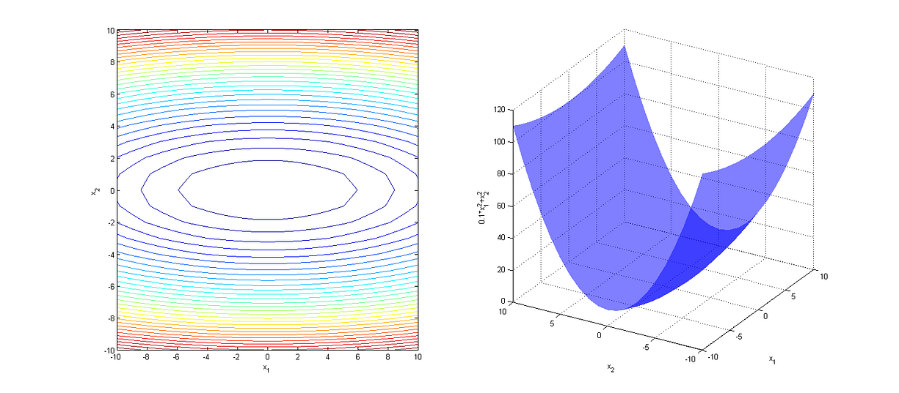
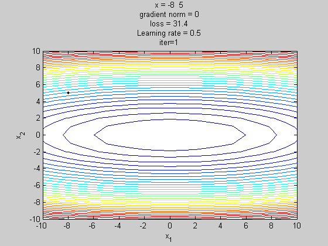
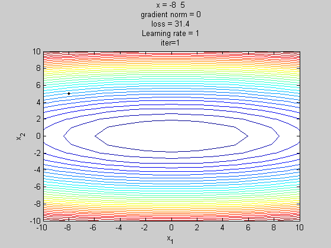
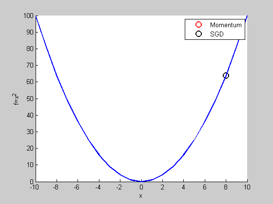
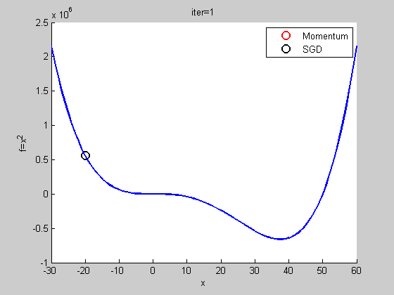
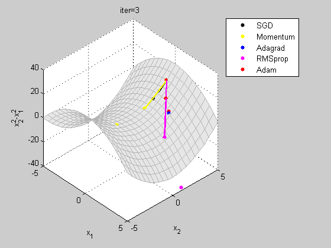

梯度最佳解相關算法(gradient descent optimization algorithms)
https://chih-sheng-huang821.medium.com/%E6%A9%9F%E5%99%A8%E5%AD%B8%E7%BF%92-%E5%9F%BA%E7%A4%8E%E6%95%B8%E5%AD%B8-%E4%B8%89-%E6%A2%AF%E5%BA%A6%E6%9C%80%E4%BD%B3%E8%A7%A3%E7%9B%B8%E9%97%9C%E7%AE%97%E6%B3%95-gradient-descent-optimization-algorithms-b61ed1478bd7
在神經網路中，不論是哪種網路，最後都是在找層和層之間的關係(參數，也就是層和層之間的權重)，而找參數的過程就稱為學習，所以神經網路的目的就是不斷的更新參數，去最小化損失函數的值，然後找到最佳解。
梯度下降法(gradient descent，GD)是一種不斷去更新參數找解的方法，前一篇文章「機器學習-基礎數學(二):梯度下降法(gradient descent)」已經介紹，這邊複習一下，公式如下
這邊的t是第幾次更新參數，γ是學習率(Learning rate)。 找「解」的時候公式是往梯度的反方向更新，但一次要更新多少，就是由學習率來控制的。
隨機梯度下降法(Stochastic gradient descent, SGD)
我們一般看深度學習的介紹，最常看到的最佳化名稱稱為「隨機梯度下降法(Stochastic gradient descent, SGD)」(這篇我為了縮短篇幅，Mini-batch SGD我把它歸納到SGD內)，我們簡單說一下這個跟GD差在哪邊。
在更新參數的時候 GD我們是一次用全部訓練集的數據去計算損失函數的梯度就更新一次參數。 SGD就是一次跑一個樣本或是小批次(mini-batch)樣本然後算出一次梯度或是小批次梯度的平均後就更新一次，那這個樣本或是小批次的樣本是隨機抽取的，所以才會稱為隨機梯度下降法。
Note: 如果有跑過open source API的都會知道需要設定batch size這件事，這件事就是在設定小批次的樣本數。後續方法幾乎都用mini-batch方式作學習。
SGD缺點
SGD一定有一些缺點，才會有後續的演進，在當下的問題如果學習率太大，容易造成參數更新呈現鋸齒狀的更新，這是很沒有效率的路徑。
我這邊舉個例子來說不同學習率對找解這件事情，參數的變化方式
下圖是x1和x2和f(x1,x2)算出來的結果，右圖是x軸和y軸是x1和x2，z軸是f(x1,x2)的值；左圖x軸和y軸是x1和x2，上面的線是等高線。 為了說明後面找「解」更新時是往最小走，所以我畫出下右圖，可以明顯發現這是一個類似碗公的形狀，「解」在正中間。所以我們只看「解」的變化(下左圖)，不看f(x1,x2)值。

左圖是x軸是x1，y軸是x2，等高線是f(x1,x2)反應出來值的大小，所以越中間f(x1,x2)值越小。右圖就是左圖的立體版，x軸是x1，y軸是x2，z軸是f(x1,x2)。
這邊我還是用SGD的方式找解 initial從[x1,x2]=[-8,5]開始去跑 學習率設定0.9，為了區隔和後續算法的差異，我設的大一點。
學習率設定0.9
這個例子就是我剛提到的「在當下的問題如果學習率太大，容易造成參數更新呈現鋸齒狀的更新」。
這邊我將學習率設定為0.5，這樣看起來就可以更快更直接走向最佳解。

學習率設定0.5
所以當gradient太大(這邊我在圖用gradient norm表示gradient的大小)的時候，如果學習率過大，這時候很容易讓找解的時候一步跨的太大，第一雖然有可能還是往最佳解走，但會發生在最後幾步跳不進最佳解內，這邊我用學習率等於1來呈現什麼叫跳不進最佳解。

學習率設定1
由上結果可以得知最好的找解方式是可以在不同學習的時間點用不同的學習率，當然還有考慮不同的方向。
Momentum
這邊的t是第幾次更新參數，γ是學習率(Learning rate)，m是momentum項(一般設定為0.9)，主要是用在計算參數更新方向前會考慮前一次參數更新的方向(v(t-1))，如果當下梯度方向和歷史參數更新的方向一致，則會增強這個方向的梯度，若當下梯度方向和歷史參數更新的方向不一致，則梯度會衰退。然後每一次對梯度作方向微調。這樣可以增加學習上的穩定性(梯度不更新太快)，這樣可以學習的更快，並且有擺脫局部最佳解的能力。
這個現象就像是丟一顆球到碗裡，球會在碗內左右振盪，隨著阻力的慢慢趨向最低點，如下圖

雖然此例子SGD跑的比momentum快，但可以發現在複雜一點後momentum會比SGD好。
比如「機器學習-基礎數學(二):梯度下降法(gradient descent)」內的例子。

之前的例子GD的學習率設定0.00001，GD會掉到local minimum，但momentum則會跳出。

學習率0.00001
Adagrad
SGD和momentum在更新參數時，都是用同一個學習率(γ)，Adagrad算法則是在學習過程中對學習率不斷的調整，這種技巧叫做「學習率衰減(Learning rate decay)」。通常在神經網路學習，一開始會用大的學習率，接著在變小的學習率，從上述例子可以發現，大的學習率可以較快走到最佳值或是跳出局部極值，但越後面到要找到極值就需要小的學習率。
Adagrad則是針對每個參數客製化的值，所以Ada這個字跟是Adaptive的簡寫，這邊假設 g_t,i為第t次第i個參數的梯度，
SGD更新就是
Adagrad則是
ε是平滑項，主要避免分母為0的問題，一般設定為1e-7。Gt這邊定義是一個對角矩陣，對角線每一個元素是相對應每一個參數梯度的平方和。這邊很有趣，一般文章都寫說分母是the sum of the squares of the gradients, i.e. θi up to time step t，然後就沒有其他說明瞭。
其實G(t)的算法如下，假設*x***是d維度的參數:
所以是一開始第一次到第t次的梯度平方和。
這邊舉個例子來說明Adagrad是怎麼計算的，這邊的ε我先設為0，公式比較不亂
如果iteration (t)次數越大，如果Gradient平方和(分母)越大，會讓學習率越來越小，這樣學習率就可以達到隨著時間減少的目的，在接近目標函數的最小值時就不會向上圖例在解的左右跳來跳去。但當Gradient平方和(分母)越小，學習率會越大。但因為每個參數的學習率會不一樣，所以在學習過程中就比較不會卡在Saddle point (最後有圖例)。
Adagrad缺點是在訓練中後段時，有可能因為分母累積越來越大(因為是從第1次梯度到第t次梯度的和)導致梯度趨近於0，如果有設定early stop的，會使得訓練提前結束。
RMSProp
RMSprop是Geoff Hinton 提出未發表的方法，和Adagrad一樣是自適應的方法，但Adagrad的分母是從第1次梯度到第t次梯度的和，所以和可能過大，兒RMSprop則是算對應的平均值，因此可以緩解Adagrad學習率下降過快的問題。
E[]在統計上就是取期望值，所以是取g_i²的期望值，白話說就是他的平均數。ρ是過去t-1時間的梯度平均數的權重，一般建議設成0.9。
Adam
Adam全名Adaptive Moment Estimation。剛剛介紹的Momentum是「計算參數更新方向前會考慮前一次參數更新的方向」， RMSprop則是「在學習率上依據梯度的大小對學習率進行加強或是衰減」。
Adam則是兩者合併加強版本(Momentum+RMSprop+各自做偏差的修正)。
m*t和v*t分別是梯度的一階動差函數和二階動差函數(非去中心化)。因為m*t和v***t初始設定是全為0的向量，Adam的作者發現算法偏量很容易區近於0，因此他們提出修正項，去消除這些偏量，細節: ADAM: A METHOD FOR STOCHASTIC OPTIMIZATION(equ. 4)。
Adam更新的準則:
作者有建議預設值β1=0.9, β2=0.999, ε=10^(-8)。
這邊舉一個例子將所有算法都去執行一遍，如下圖:
目標函數

Reference: 神人大作: http://ruder.io/optimizing-gradient-descent/index.html#adam ADAM: https://arxiv.org/abs/1412.6980